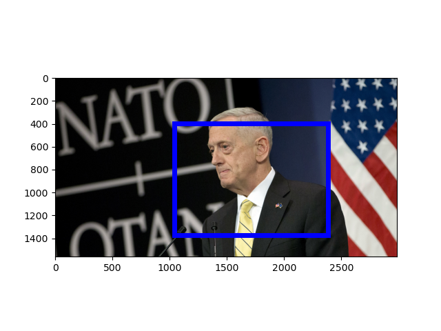

[Raw Text]: U.S. Secretary of Defense Jim Mattis speaks during a media conference at NATO headquarters in Brussels, Feb. 16, 2017. On the prospect of U.S.-Russian military cooperation, Mattis said conditions are not ideal.
======================================================================
Mention: http://www.isi.edu/gaia/entities/uiuc/VOA_EN_NW_2017_02_16_3727822_0/EN_Entity_EDL_0000310
---- VOA_EN_NW_2017_02_16_3727822_0:173-178 On the prospect of U . S .- Russian military cooperation , Mattis said conditions are not ideal .
---- VOA_EN_NW_2017_02_16_3727822_0:26-35 U . S . Secretary of Defense Jim Mattis speaks during a media conference at NATO headquarters in Brussels , Feb . 16 , 2017 .
---- VOA_EN_NW_2017_02_16_3727822_0:5-13 U . S . Secretary of Defense Jim Mattis speaks during a media conference at NATO headquarters in Brussels , Feb . 16 , 2017 .
Image:
GroundingConfidence: http://www.columbia.edu/AIDA/DVMM/Entities/GroundingBox/RUN00006/JPG/VOA_EN_NW_2017_02_16_3727822_0/1, 0.4684239

Event:
======================================================================